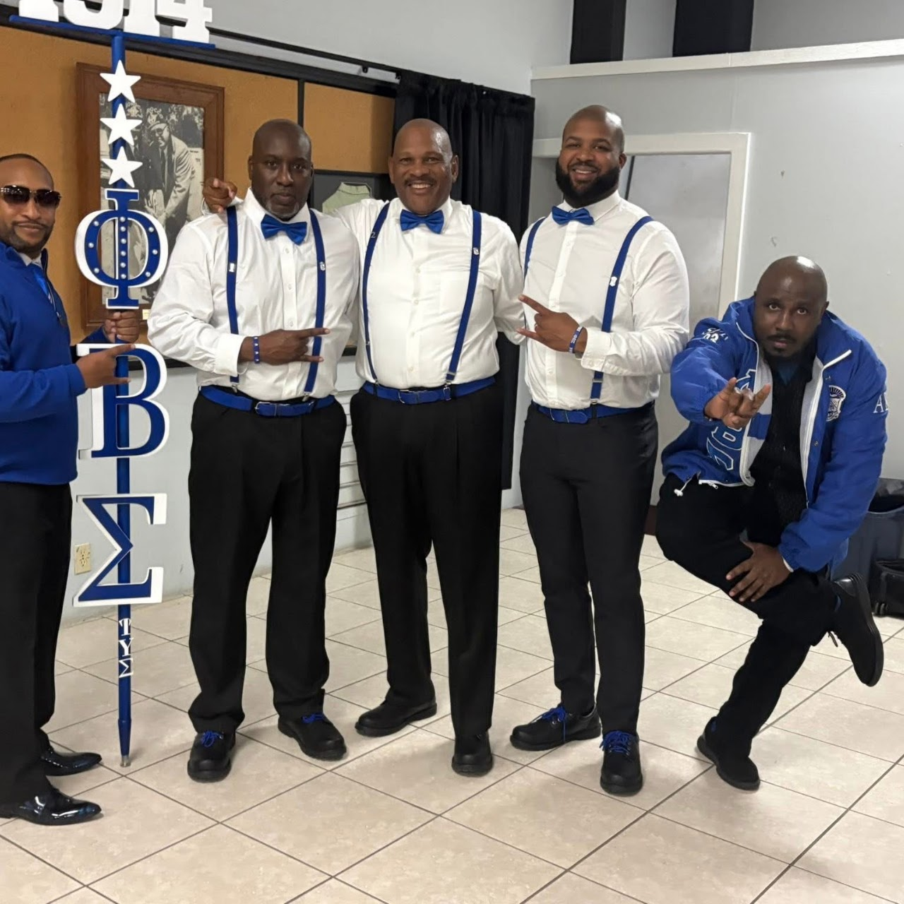
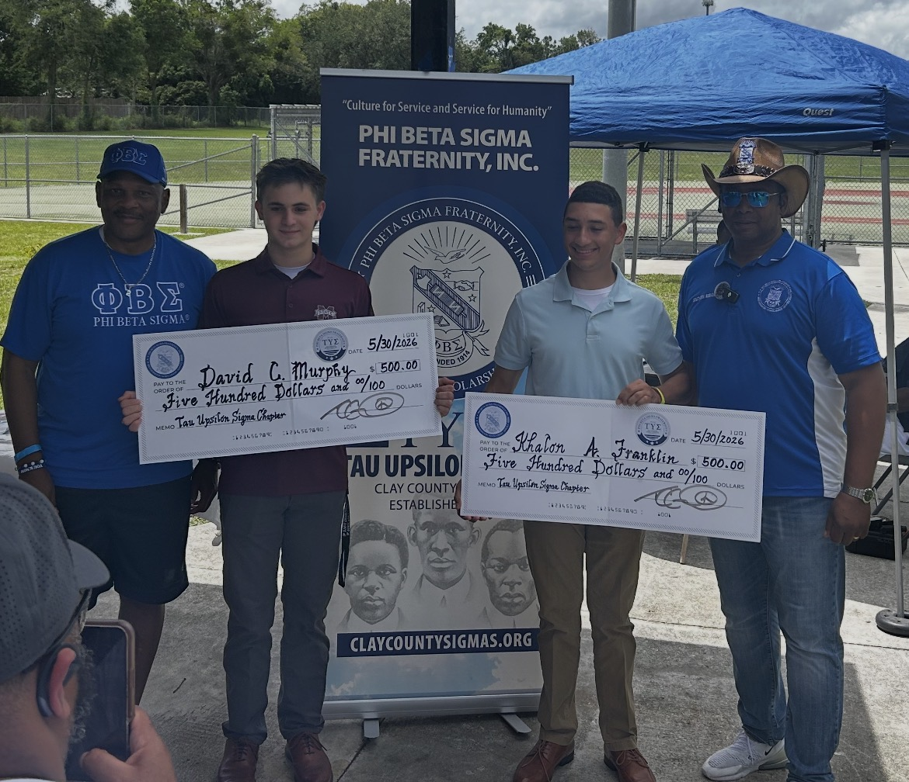
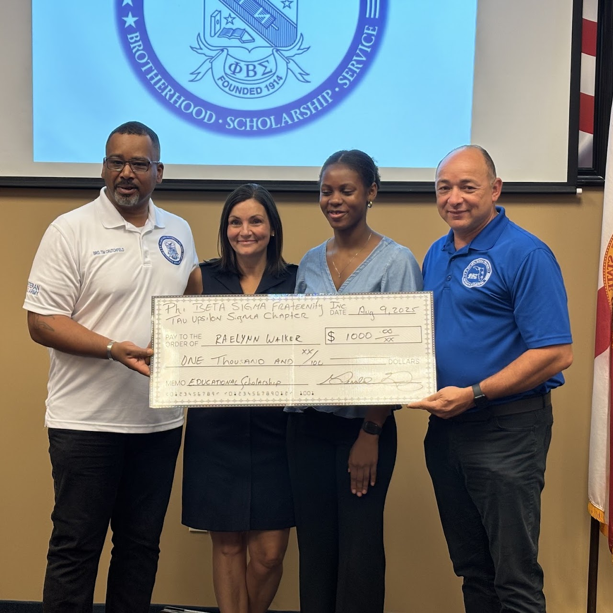
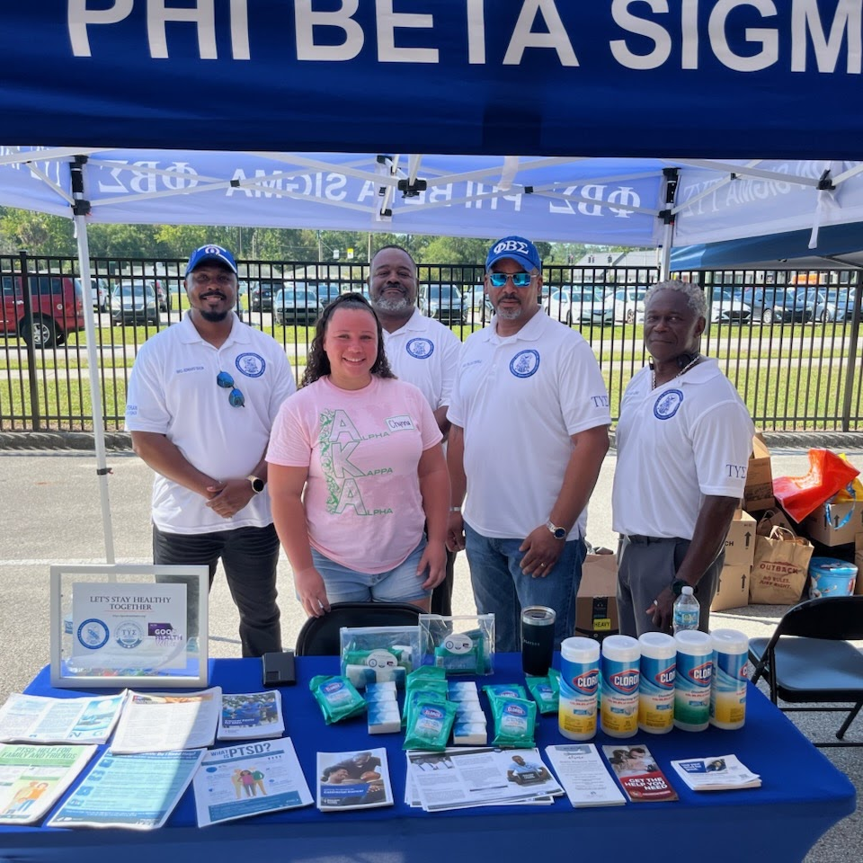

Our Programs
Brotherhood • Scholarship • Service in Action
Advancing Phi Beta Sigma's programs and initiatives throughout the geographical area of Clay County, Florida and surrounding areas.Service With Purpose
Phi Beta Sigma Fraternity, Inc., through the Tau Upsilon Sigma Chapter, advances programs and initiatives designed to strengthen individuals, families, and communities. Through the Fraternity's national initiatives, local programming, and community partnerships, we focus our efforts on economic empowerment, education, and social action throughout the geographical area of Clay County, Florida and surrounding areas.

Bigger and Better
Business
Bigger and Better Business is a Phi Beta Sigma initiative promoting economic empowerment, financial literacy, entrepreneurship, and support for businesses within our communities. Locally, Tau Upsilon Sigma advances these goals through educational programming, partnerships, and community engagement designed to help individuals and families build stronger financial futures.
Focus Areas: Financial Literacy • Entrepreneurship • Economic Empowerment • Business Development

Education
Education reflects Phi Beta Sigma's commitment to scholarship, academic achievement, mentorship, and opportunities for young people. Locally, Tau Upsilon Sigma supports students through educational initiatives, scholarships, mentoring, and programs designed to encourage achievement and prepare the next generation for success.
Focus Areas: Scholarships • Mentorship • Academic Achievement • Youth Development

Social Action
Social Action reflects Phi Beta Sigma's commitment to civic engagement, community advocacy, health initiatives, voter education, and meaningful service. Locally, Tau Upsilon Sigma works alongside community partners to address local needs, promote awareness, and create positive change throughout the geographical area of Clay County, Florida and surrounding areas.
Focus Areas: Community Service • Civic Engagement • Health & Wellness • Voter Education • Community Advocacy
Programs In Action
See Phi Beta Sigma's principles in action in our communities
See how the Tau Upsilon Sigma Chapter advances Phi Beta Sigma's mission throughout the geographical area of Clay County, Florida and surrounding areas through brotherhood, scholarship, service, and community engagement.

Scholarship
